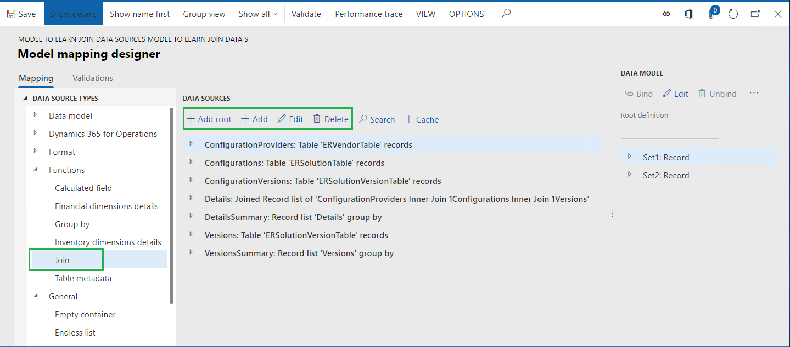
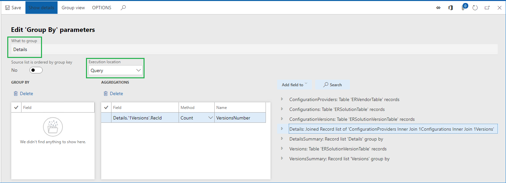
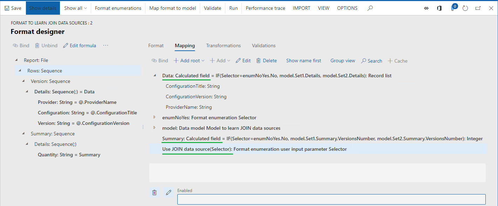

Use JOIN data sources to get data from multiple application tables in Electronic reporting (ER) model mappings
While configuring Electronic reporting (ER) model mappings or formats, you can add required data sources of the Join type. At design time, a Join data source is configured as a set of several data sources each of which returns a list of records. For every data source except the first one, you need to define necessary conditions to join records of the current and previous data sources. At runtime, a configured data source of Join type returns a single joined list of records containing fields from the records of nested data sources.
The following types of joins are currently supported:
- Outer (left) join:
- Join all records of the first (left-most) data source and then any matching in accordance to configured conditions records of the second (right-most) data source.
- Inner (right) join:
- Join only records of the first (left-most) data source and only records of the second (right-most) data source matching to each other in accordance to configured conditions.
In the configured Join data source, when all data sources are the Table records type, execution of the Join data source can be performed at the database level using a single SQL statement. This statement reduces the number of database calls, which improves model-mapping performance. Otherwise, execution of Join data source is performed in memory.
Note
Using the VALUEIN function in ER expressions that specify conditions for joining records in data sources of Join type is not supported yet. Visit the Formula designer in Electronic reporting page for more details about this function.
To learn more about this feature, complete the example in this topic.
Example: Use JOIN data sources in ER model mappings
The following steps explain how the System administrator or Electronic reporting developer can configure an Electronic reporting (ER) model mapping to get data from multiple application tables at once by using data sources of the Join type to improve data access performance. These steps can be performed for any company of Dynamics 365 Finance or Regulatory Configuration Services (RCS).
Prerequisites
To complete the examples in this topic, you must have access to one of the following depending on what service is used to compete these steps:
Access to Finance for one of the following roles:
- Electronic reporting developer
- Electronic reporting functional consultant
- System administrator
Access to RCS for one of the following roles:
- Electronic reporting developer
- Electronic reporting functional consultant
- System administrator
You also must first complete the steps in the Create a configuration provider and mark it as active procedure.
In advance, you must also download from Microsoft Download Center and save locally the following sample ER configuration files:
| Content description | File name |
|---|---|
| Sample ER data model configuration file, which is used as the data source for the examples. | Model to learn JOIN data sources.version.1.1.xml |
| Sample ER model mapping configuration file, which implements the ER data model for the examples. | Mapping to learn JOIN data sources.version.1.1.xml |
| Sample ER format configuration file. This file describes the data to populate the ER format component for the examples. | Format to learn JOIN data sources.version.1.1.xml |
Activate a configurations provider
Access either Finance or RCS in the first session of your web browser.
Go to Organization administration > Workspaces > Electronic reporting.
On the Localization configurations page, in the Configuration providers section, make sure that the configuration provider for the Litware, Inc. sample company is listed, and that it's marked as Active. If you don't see this configuration provider, follow the steps in Create a configuration provider and mark it as active procedure.

Import sample ER configuration files
Select Reporting configurations.
Import the ER data model configuration file.
- Select Exchange.
- Select Load from XML file.
- Select Browse to find the Model to learn JOIN data sources.version.1.1.xml file.
- Select OK.
Import the ER model-mapping configuration file.
- Select Exchange.
- Select Load from XML file.
- Select Browse to find the Mapping to learn JOIN data sources.version.1.1.xml file.
- Select OK.
Import the ER format configuration file.
- Select Exchange.
- Select Load from XML file.
- Select Browse to find the Format to learn JOIN data sources.version.1.1.xml file.
- Select OK.
In the configurations tree, expand the Model to learn JOIN data sources item as well as other model items (when available).
Observe the list of ER configurations in the tree as well as version details on the Versions fast tab – they will be used as the source of data for your sample report.

Turn on execution trace options
Select CONFIGURATIONS.
Select User parameters.
Set execution trace parameters as shown on the screenshot below.
With these parameters turned on, for every execution of the imported ER format file, the execution trace will be generated. Using details of generated execution trace, you can analyze the execution of ER format and ER model-mapping components. Visit the Trace execution of ER format to troubleshoot performance issues page for more details about ER execution trace feature.
Review ER model mapping (part 1)
Review settings of the ER model-mapping component. The component is configured to access information about versions of ER configurations, details of configurations and configuration providers without using data sources of the Join type.
Select Mapping to learn JOIN data sources configuration.
Select Designer to open the list of mappings.
Select Designer to review the mapping details.
Select Show details.
In the configurations tree, expand the Set1 and Set1.Details data model items:
- Binding Details: Record list = Versions indicates that the Set1.Details item is bound to the Versions data source returning records of the ERSolutionVersionTable table. Each record of this table represents a single version of an ER configuration. The content of this table is presented in the Versions fast tab on the Configurations page.
- Binding ConfigurationVersion: String = @.PublicVersionNumber means that the value of the public version of each ER configuration’s version is taken from the PublicVersionNumber field of the ERSolutionVersionTable table and placed to the ConfigurationVersion item.
- Binding ConfigurationTitle: String = @.'>Relations'.Solution.Name indicates that the name of an ER configuration is taken from the Name field of the ERSolutionTable table assessing by using the many-to-one relation ('>Relations') between the ERSolutionVersionTable and ERSolutionTable tables. Names of ER configurations of the current application instance are presented in the configurations tree on the Configurations page.
- Binding @.'>Relations'.Solution.'>Relations'.SolutionVendor.Name means that the name of the configuration provider that owns the current configuration is taken from the Name field of the ERVendorTable table assessing by using the many-to-one relation between ERSolutionTable and ERVendorTable tables. Names of ER configuration providers are presented in the configurations tree on the Configurations page on the page header for each configuration. The entire list of ER configuration providers can be found on the Organization administration > Electronic reporting > Configuration provider table page.

In the configurations tree, expand the Set1.Summary data model item:
- Binding VersionsNumber: Integer = VersionsSummary.aggregated.VersionsNumber indicates that the Set1.Summary.VersionsNumber item is bound to the VersionsNumber aggregation field of the VersionsSummary data source of the GroupBy type that was configured to return the number of records of the ERSolutionVersionTable table via the Versions data source.
Close the page.
Review ER model mapping (part 2)
Review settings of the ER model-mapping component. The component is configured to access information about versions of ER configurations, details of configurations and configuration providers with using a data source of the Join type.
In the configurations tree, expand the Set2 and Set2.Details data model items. The binding Details: Record list = Details indicates that the Set2.Details item is bound to the Details data source configured as the data source of the Join type.

The Join data source can be added by selecting the Functions\Join data source:

Select Details data source.
Select Edit in the Data sources pane.
Select Edit join.
Select Show details.

This page is used to design the required data source of the Join type. At runtime, this data source will create a single joined list of records from the data sources in the Joined list grid. Join of records will start from the ConfigurationProviders data source that is in the grid as a first one (the Type column is blank for it). Records of every other data source will be joined consequently to records of the parent data source based on its order in this grid. Every joining data source must be configured as a data source nested under a target data source (
1Versionsdata source is nested under1Configurationsone;1Configurationsdata source is nested under ConfigurationProviders one). Each configured data source must contain the conditions for the join. In the data source for this particular Join, the following joins are defined:- Each record of the ConfigurationProviders data source (referred to the ERVendorTable table) is joined with only records of the 1Configurations one (referred to in the ERSolutionTable table) having the same value in the SolutionVendor and RecId fields. The Inner join type is used for this join as well as the following conditions for matching records:
FILTER (Configurations, Configurations.SolutionVendor = ConfigurationProviders.RecId)
- Each record of the 1Configurations data source (referred to the ERSolutionTable table) is joined with the only records of the 1Versions one (referred to the ERSolutionVersionTable table) having the same value in the Solution and RecId fields. Inner join type is used for this join as well as the following conditions for matching records:
FILTER (ConfigurationVersions, ConfigurationVersions.Solution = ConfigurationProviders.'1Configurations'.RecId)
- Execute option is configured as Query meaning that this join data source will be executed at runtime on database level as a direct SQL call.
For joining records of data sources representing application tables, you can specify join conditions by using pairs of fields other than ones that describe existing in AOT relations between these tables. This type of join can be configured to execute at the database level as well.
Close the page.
Select Cancel.
In the configurations tree, expand the Set2.Summary data model item:
- Binding VersionsNumber: Integer = DetailsSummary.aggregated.VersionsNumber indicates that the Set2.Summary.VersionsNumber item is bound to the VersionsNumber aggregation field of the DetailsSummary data source of the GroupBy type that was configured to return the number of joined records of the Details data source of the Join type.
- The Execution location option is configured as Query meaning that this GroupBy data source will be run at runtime as a direct SQL call at the database level. This behavior is possible because the base data source Details of the Join type is configured as executed at the database level.

Close the page.
Select Cancel.
Execute ER format
Access Finance or RCS in the second session of your web browser using same credentials and company as in the first session.
Go to Organization administration > Electronic reporting > Configurations.
Expand Model to learn JOIN data sources configuration.
Select Format to learn JOIN data sources configuration.
Select Designer.
Select Show details.
Select Mapping.
Select Expand/Collapse.
This format is designed to populate a generated text file with a new line for every version of an ER configuration (Version sequence). Each generated line will contain the name of a configuration provider owning the current configuration, the configuration name, and the configuration version separated by semicolon mark. The final line of generated file will contain the number of discovered versions of ER configurations (Summary sequence).

The Data and Summary data sources are used to populate configuration version details to the generated file:
- Information from the Set1 data model is used when you choose No for the Selector data source at runtime on the user dialog page when running ER format.
- Information from the Set2 data model is used when you choose Yes for the Selector data source at runtime on the user dialog page.

Select Run.
On the dialog page, select No in the Use JOIN data source field.
Select OK.
Review generated file.

Analyze ER format execution trace
In the first session of Finance or RCS, select Designer.
Select Performance trace.
In the Performance trace grid, select the top-most record of the latest execution trace of an ER format that used the current model mapping component.
Select OK.
Execution statistics informs you about duplicated calls to application tables:
- ERSolutionTable has been called as many times as you have configuration version records in the ERSolutionVersionTable table, while the number of such calls could be reduced in times for performance improvement.
- ERVendorTable has been called twice for every configuration version record that was discovered in the ERSolutionVersionTable table, while the number of such calls could be reduced as well.
Close the page.
Execute ER format
Switch to your web browser tab with the second session of Finance or RCS.
Select Run.
On the dialog page, select Yes in the Use JOIN data source field.
Select OK.
Review generated file.

Analyze ER format execution trace
In the first session of Finance or RCS, select Designer.
Select Performance trace.
In the Performance trace grid, select top-most record representing the latest execution trace of an ER format that used the current model mapping component.
Select OK.
Statistics informs you about the following:
- Application database has been called once to get records from ERVendorTable, ERSolutionTable, and ERSolutionVersionTable tables to access required fields.

- Application database has been called once to calculate the number of configuration versions by using joins that were configured in the Details data source.
Limitations
As you can see from the example in this topic, the JOIN data source can be built from several data sources that describe the individual datasets of the records that must eventually be joined. You can configure those data sources by using the built-in ER FILTER function. When you configure the data source so that it's called beyond the JOIN data source, you can use company ranges as part of the condition for data selection. The initial implementation of the JOIN data source doesn't support data sources of this type. For example, when you call a FILTER-based data source within the scope of execution of a JOIN data source, if the called data source contains company ranges as part of the condition for data selection, an exception occurs.
In Microsoft Dynamics 365 Finance version 10.0.12 (August 2020), you can use company ranges as part of the condition for data selection in FILTER-based data sources that are called within the scope of execution of a JOIN data source. Because of the limitations of the application [query (This is an external linThis link was changed due to HTMLfromRepoGenerator)](../dev-ref/xpp-library-objects.md#query (This is an external linThis link was changed due to HTMLfromRepoGenerator)-object-model) builder, the company ranges are supported only for the first data source of a JOIN data source.
Example
For example, you must make a single call to the application database to get the list of foreign trade transactions of multiple companies and the details of the inventory item that is referred to in those transactions.
In this case, you configure the following artifacts in your ER model mapping:
- Intrastat root data source that represents the Intrastat table.
- Items root data source that represents the InventTable table.
- Companies root data source that returns the list of companies (DEMF and GBSI in this example) where transactions must be accessed. The company code is available from the Companies.Code field.
- X1 root data source that has the expression
FILTER (Intrastat, VALUEIN(Intrastat.dataAreaId, Companies, Companies.Code)). As part of the condition for data selection, this expression contains the definition of company rangesVALUEIN(Intrastat.dataAreaId, Companies, Companies.Code). - X2 data source as a nested item of the X1 data source. It includes the expression
FILTER (Items, Items.ItemId = X1.ItemId).
Finally, you can configure a JOIN data source where X1 is the first data source and X2 is the second data source. You can specify Query as the Execute option to force ER to run this data source on the database level as a direct SQL call.
When the configured data source is run while the ER execution is traced, the following statement is shown in the ER model mapping designer as part of the ER performance trace.
SELECT ... FROM INTRASTAT T1 CROSS JOIN INVENTTABLE T2 WHERE ((T1.PARTITION=?) AND (T1.DATAAREAID IN (N'DEMF',N'GBSI') )) AND ((T2.PARTITION=?) AND (T2.ITEMID=T1.ITEMID AND (T2.DATAAREAID = T1.DATAAREAID) AND (T2.PARTITION = T1.PARTITION))) ORDER BY T1.DISPATCHID,T1.SEQNUM
Note
An error occurs if you run a JOIN data source that has been configured so that it contains data selection conditions that have company ranges for additional data sources of the executed JOIN data source.
Additional resources
Formula designer in Electronic reporting
Trace execution of ER format to troubleshoot performance issues